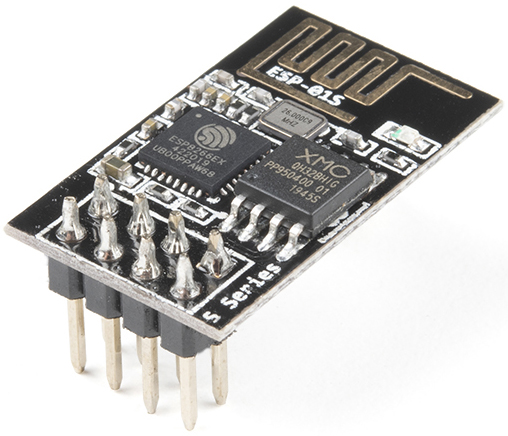
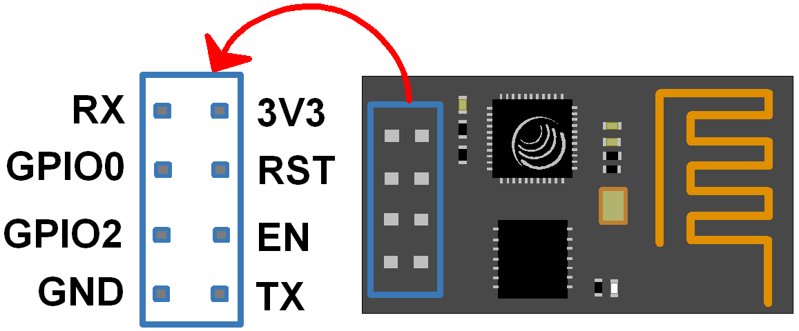
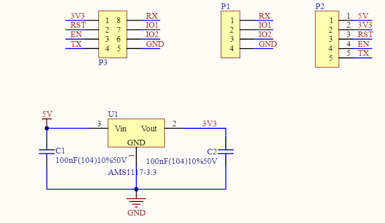

Bemerkung
Hallo und willkommen in der SunFounder Raspberry Pi & Arduino & ESP32 Enthusiasten-Gemeinschaft auf Facebook! Tauchen Sie tiefer ein in die Welt von Raspberry Pi, Arduino und ESP32 mit anderen Enthusiasten.
Warum beitreten?
Expertenunterstützung: Lösen Sie Nachverkaufsprobleme und technische Herausforderungen mit Hilfe unserer Gemeinschaft und unseres Teams.
Lernen & Teilen: Tauschen Sie Tipps und Anleitungen aus, um Ihre Fähigkeiten zu verbessern.
Exklusive Vorschauen: Erhalten Sie frühzeitigen Zugang zu neuen Produktankündigungen und exklusiven Einblicken.
Spezialrabatte: Genießen Sie exklusive Rabatte auf unsere neuesten Produkte.
Festliche Aktionen und Gewinnspiele: Nehmen Sie an Gewinnspielen und Feiertagsaktionen teil.
👉 Sind Sie bereit, mit uns zu erkunden und zu erschaffen? Klicken Sie auf [hier] und treten Sie heute bei!
ESP8266-Modul

Der ESP8266 ist ein kostengünstiger Wi-Fi-Mikrochip, ausgestattet mit integrierter TCP/IP-Netzwerksoftware sowie Mikrocontroller-Fähigkeiten, produziert von Espressif Systems in Shanghai, China.
Auf den Westen wurde erstmals im August 2014 durch das ESP-01-Modul aufmerksam gemacht, welches von einem Dritthersteller, Ai-Thinker, produziert wird. Dieses kleine Modul ermöglicht es Mikrocontrollern, sich mit einem Wi-Fi-Netzwerk zu verbinden und einfache TCP/IP-Verbindungen mit Hayes-ähnlichen Befehlen herzustellen. Zu Beginn gab es kaum Dokumentation in englischer Sprache zu dem Chip und den akzeptierten Befehlen. Die sehr geringen Kosten und die minimale Anzahl externer Bauteile, die auf eine kostengünstige Massenproduktion hindeuten, weckten das Interesse vieler Entwickler.
Pinbelegung des ESP8266 und deren Funktionen:

Pin |
Name |
Beschreibung |
|---|---|---|
1 |
TXD |
UART_TXD, Senden; Allgemeiner Eingabe/Ausgabe-Pin: GPIO1; Pull-down beim Start nicht zulässig. |
2 |
GND |
GND |
3 |
CU_PD |
Funktioniert auf hohem Pegel; Abschaltung bei niedrigem Pegel. |
4 |
GPIO2 |
Muss beim Einschalten auf hohem Pegel sein, Hardware-Pull-down ist nicht zulässig; Standardmäßig Pull-up. |
5 |
RST |
Externes Reset-Signal, Reset bei niedrigem Pegel; Funktioniert bei hohem Pegel (standardmäßig hoher Pegel). |
6 |
GPIO0 |
WiFi-Statusanzeige; Betriebsmodus-Auswahl: Pull-up: Flash-Boot, Betriebsmodus; Pull-down: UART-Download, Download-Modus. |
7 |
VCC |
Stromversorgung (3,3V) |
8 |
RXD |
UART_RXD, Empfangen; Allgemeiner Eingabe/Ausgabe-Pin: GPIO3; |
ESP8266-Adapter

Der ESP8266-Adapter ist eine Erweiterungsplatine, die es ermöglicht, das ESP8266-Modul auf einem Steckbrett zu verwenden.
Die Platine ist perfekt auf die Pins des ESP8266 abgestimmt und fügt zudem einen 5V-Pin hinzu, um die Spannung vom Arduino-Board zu erhalten. Der integrierte AMS1117-Chip wird verwendet, um das ESP8266-Modul nach Spannungsreduktion auf 3,3V zu betreiben.
Das Schaltbild ist wie folgt:
